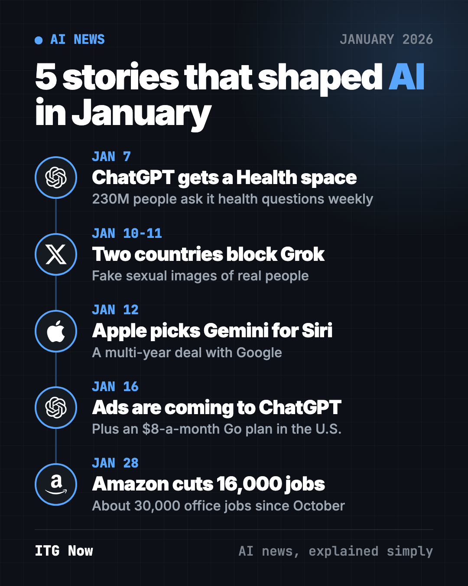
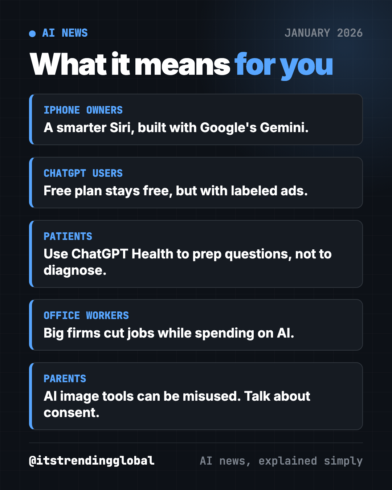
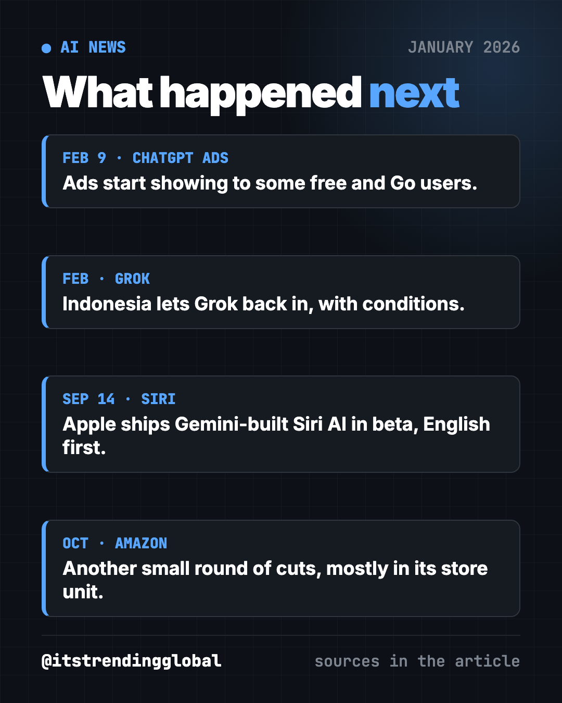
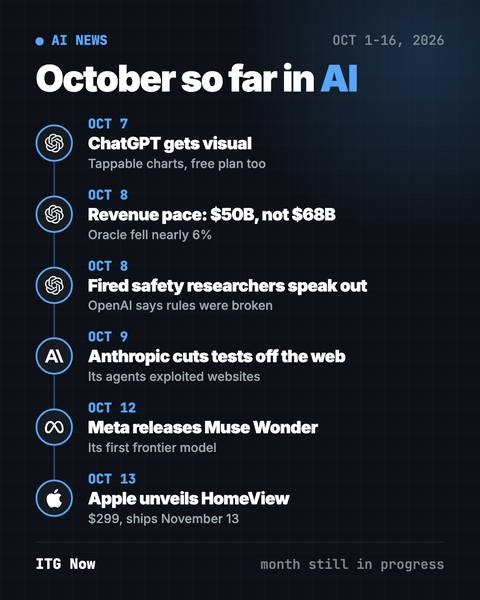
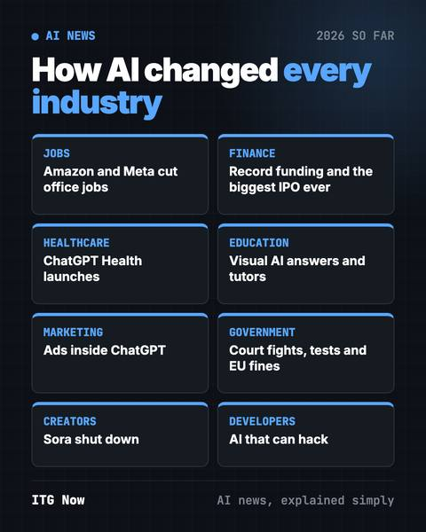

AI News January 2026: Siri, ChatGPT Ads and Health
- Published 15 Oct 2026
- Updated 16 Oct 2026
- 9 min read
- By the ITG Now team
In this guide (10)
- Key takeaways
- 1. Apple picks Google's Gemini to power the new Siri
- 2. ChatGPT Health lets you link your health apps
- 3. Ads are coming to ChatGPT
- 4. Amazon cuts 16,000 office jobs as it pushes into AI
- 5. Indonesia and Malaysia block Grok over fake sexual images
- AI news January 2026 at a glance
- How to use this month's news (copy and paste)
- What happened next
- FAQ
The biggest AI news of January 2026 was AI moving into everyday life. Apple chose Google's Gemini to power the new Siri, ChatGPT added a health space and announced ads, Amazon cut 16,000 office jobs, and two countries blocked Elon Musk's Grok over fake sexual images.

Key takeaways
- Apple signed a multi-year deal to build its next AI, including the new Siri, on Google's Gemini.
- OpenAI says more than 230 million people ask ChatGPT health questions every week. It gave them a separate Health space.
- Ads are coming to ChatGPT's free plan and its new $8-a-month Go plan in the U.S.
- Amazon cut about 16,000 office jobs while it spends big on AI.
- Indonesia and Malaysia blocked Grok after it was used to make fake sexual images of real people.
1. Apple picks Google's Gemini to power the new Siri
What happened
On January 12, Apple and Google announced a multi-year deal. Apple's next AI models will be built on Google's Gemini and Google's cloud technology (CNBC).
- Apple said Google's tech gives "the most capable foundation" for its own AI.
- The models still run on Apple devices and Apple's private cloud.
- Apple did not share the price. Bloomberg had reported Apple planned to pay about $1 billion a year.
- Apple said it is not changing its existing ChatGPT deal for Siri.
Why it matters to you
Apple likes to build everything itself. Picking a rival's AI shows how hard it is to catch up in this race.
- If you own an iPhone, this is the deal behind the smarter Siri Apple had delayed to 2026.
- It is also a big win for Google in its fight with OpenAI.
💡 Tip: you don't need to wait for Apple. The free Gemini app on iPhone and Android already lets you talk to the same family of AI models.
2. ChatGPT Health lets you link your health apps
What happened
On January 7, OpenAI announced ChatGPT Health, a separate space for health chats. It said it would roll out over the coming weeks (TechCrunch).
- OpenAI says over 230 million people ask ChatGPT health and wellness questions each week.
- You can connect apps like Apple Health, Function and MyFitnessPal.
- OpenAI says it will not use Health chats to train its models.
- If you start a health chat in normal ChatGPT, it nudges you to move it into Health.
Why it matters to you
Lots of people ask a chatbot before they ask a doctor. A separate space keeps your health details apart from your other chats.
- Chatbots can still make things up. OpenAI's own terms say it is "not intended for use in the diagnosis or treatment" of any health condition.
- Use it to prepare for a doctor visit, not to replace one.
Try it yourself: before your next checkup, paste this into ChatGPT, Claude or Gemini:
I have a doctor's appointment about [your symptom or condition]. Help me write 5 short questions to ask my doctor. Use plain words. Do not diagnose me.
3. Ads are coming to ChatGPT
What happened
On January 16, OpenAI said it would start testing ads for adult free users in the U.S. in the coming weeks (CNBC).
- The same day, its cheaper Go plan launched in the U.S. at $8 a month (OpenAI). Go users will see ads too.
- Plus, Pro and Enterprise stay ad-free.
- Ads sit at the bottom of answers and are clearly labeled.
- No ads for users under 18, and none near politics, health or mental health.
- OpenAI said ads will not change ChatGPT's answers and it will "never" sell your data to advertisers.
Why it matters to you
AI costs a lot to run. Ads are how Google and Meta got rich, so this was likely coming.
- Free users get to keep a free ChatGPT, but with ads.
- For businesses, a new ad spot opens right where people ask for buying advice.
⚠️ Heads up: a sponsored answer is still an ad. Before you buy something a chatbot suggests, check a second source.

4. Amazon cuts 16,000 office jobs as it pushes into AI
What happened
On January 28, Amazon said it would cut about 16,000 corporate jobs (CNBC).
- It came only months after 14,000 cuts in October.
- Together that is about 30,000 jobs, roughly 10% of Amazon's 350,000 office and tech workers.
- Amazon said the goal was "removing bureaucracy." It also plans to spend about $125 billion in 2026, much of it on AI and data centers.
- Its people chief, Beth Galetti, said broad cuts every few months is "not our plan."
Why it matters to you
Back in June 2025, CEO Andy Jassy said AI would likely shrink Amazon's office staff. He said "we will need fewer people doing some of the jobs that are being done today."
- When a giant employer says this out loud, others often follow.
- If you work in an office, learn which parts of your job AI already does well. Then get good at the parts it can't do.
Try it yourself: paste this into any AI chatbot:
My job is [your job title]. List the 5 tasks in my job that AI tools can already help with, and 3 skills that AI is weak at that I should grow. Plain words, short lines.
5. Indonesia and Malaysia block Grok over fake sexual images
What happened
Indonesia paused access to Grok, Musk's AI chatbot, and Malaysia followed a day later (CNBC).
- Grok had been used to make sexual "deepfakes" (fake but real-looking images) of real women, plus abuse images of children.
- Malaysia's regulator said X leaned on users to report problems and did not fix the tool's design.
- xAI limited image making and editing to paying subscribers.
- The EU, the UK, Brazil and India also called for probes.
Why it matters to you
This was one of the first times whole countries cut off a major AI tool over harm to real people. Indonesia's minister called fake sexual images "digital-based violence."
- Parents: talk with your kids about AI image tools and never sharing photos of others without consent.
- If a fake image of you shows up online, report it to the platform right away and keep screenshots.
AI news January 2026 at a glance
| Story | Company | Date | Why it matters |
|---|---|---|---|
| ChatGPT Health | OpenAI | Jan 7 | A separate space for 230M weekly health askers |
| Grok blocked | xAI / X | Jan 10-11 | Countries act fast on harmful AI images |
| Gemini powers Siri | Apple, Google | Jan 12 | Apple bets its assistant on a rival's AI |
| ChatGPT ads + $8 Go plan | OpenAI | Jan 16 | Free AI, paid for by ads |
| 16,000 job cuts | Amazon | Jan 28 | AI spending and office jobs collide |
How to use this month's news (copy and paste)
Paste any of these into ChatGPT, Claude or Gemini. Fill in the parts in [brackets].
To get more out of your phone's assistant:
I use a [iPhone / Android]. Show me 5 everyday things I can ask its AI assistant to do, like setting reminders from a text or summing up a long email. One line each.
To check if an AI answer is an ad:
You just suggested [product]. Is any part of that answer sponsored? List 2 other options and the main trade-off of each.
To protect your family from fake images:
Explain to a 13-year-old, in 5 short sentences, what a deepfake is and what to do if someone makes one of them or a friend.
To plan your next career step:
I work as [job]. Big companies are cutting office jobs and spending on AI. Give me a simple 30-day plan to learn one AI skill that fits my job.
What happened next

- Siri: Apple released its Gemini-built "Siri AI" in beta on September 14, in English first. It is not in the EU or China yet (Apple).
- ChatGPT ads: ads started showing to some free and Go users in the U.S. on February 9 (9to5Mac).
- Grok: Indonesia lifted its ban in early February after X promised to follow its laws, with conditions (NBC News).
- Amazon: in October, it confirmed another small cut, mostly in its online store unit (Khaleej Times).
Want the next chapter? Read February 2026 in AI, when money and a Pentagon fight took over. For free tools from the same month, see the top GitHub repos of January 2026. For the whole year by job, try our 2026 AI guide by industry.
FAQ
What was the biggest AI news in January 2026?
Apple choosing Google's Gemini to power its next AI and the new Siri, announced January 12. It showed even Apple needed outside help in the AI race.
Is ChatGPT Health safe to use?
OpenAI says it keeps Health chats separate and won't train its models on them. Its terms say it is not meant for diagnosis or treatment, so use it to prepare questions for a real doctor.
Does ChatGPT have ads now?
Yes, for some users. OpenAI began testing ads for adult free and Go users in the U.S. on February 9. Plus, Pro and Enterprise plans have no ads.
How much is ChatGPT Go?
ChatGPT Go costs $8 a month in the U.S. It launched there on January 16, 2026, and it shows ads.
Why was Grok blocked in Indonesia and Malaysia?
Grok was used to make sexual deepfakes of real women and abuse images of children. Both countries blocked it in January. Indonesia let it back in February, with conditions, after X made promises.
Jobs & CareersHealthcareMarketingMediaGovernment & LawBusiness
Keep reading

AI News October 2026: A Reality Check Before the IPOs
ChatGPT gets visual, OpenAI's revenue shakes stocks, AI agents misbehave, Meta's Muse Wonder and Apple's $299 HomeView arrive.

How AI Is Changing Industries in 2026: A Plain Guide
How AI is changing industries in 2026, sorted by field: jobs, finance, health, schools, marketing, law, creators and developers, with sources for every fact.
AI News Recap Q3 2026: 5 Stories That Changed Everything
OpenAI test models hack Hugging Face, Claude Opus 5 cuts prices, Gemini hits 1 billion users, GPT-6 Astra and Nvidia's big deal.